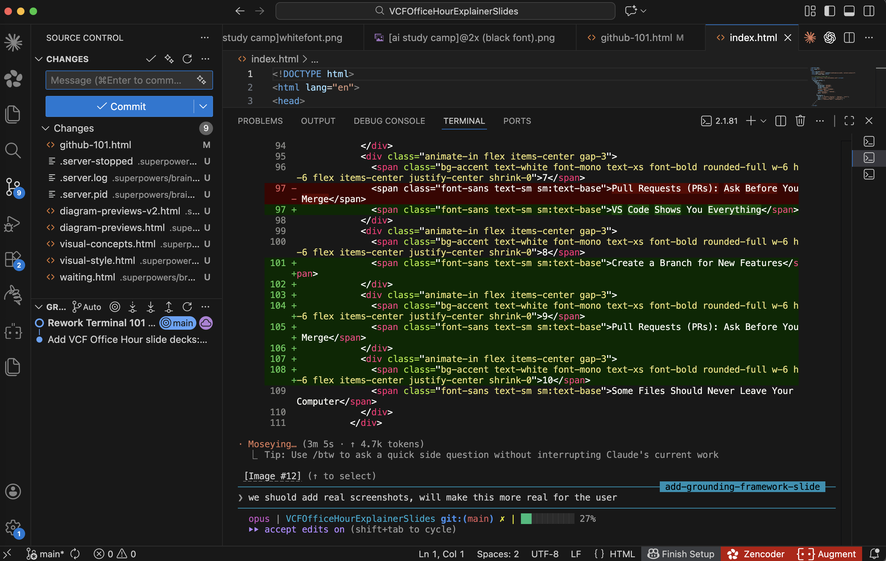

Git & GitHub 101
Version control for vibe coders
.png) Created by Nicole Garcia Fischer
Created by Nicole Garcia Fischer
What We'll Cover
Created by Nicole Garcia Fischer
Git Lives on Your Computer, GitHub Lives in the Cloud
Git
A version control tool on your computer. It tracks every change to your code.
$ git commit -m "save point"
GitHub
A website where you store and share your Git projects in the cloud.
Created by Nicole Garcia Fischer
You're Three Installs Away from Version Control
Install Git
Check if it's already installed by running:
git --version
Create a GitHub Account
Sign up at github.com — it's free for personal use.
Install GitHub Desktop
A visual interface for Git operations. Great for beginners and quick undo actions.
Created by Nicole Garcia Fischer
Every Project Starts with a Private Repo
Go to github.com and click the + button → New repository
When creating a new repo, you need:
- Name — short, descriptive, kebab-case
- Description — one line about what it does
- Visibility — set to Private
- README — check "Add a README file"
Always set repos to Private. If you ever had a public repo with API keys, make it private and rotate those keys immediately.
Created by Nicole Garcia Fischer
Your Code Exists in Two Places — Sync It Yourself
Local
Your Computer
Where you + Claude Code edit
Remote / Origin
GitHub
Cloud backup your team sees
Changes don't sync automatically. You have to commit locally first and then push to origin.
Created by Nicole Garcia Fischer
Change, Test, Commit, Push — That's the Whole Workflow
The more you commit, the more you can revert back to specific moments in time should an error occur.
Ways to undo changes
Tell Claude to undo
Use /rewind
GitHub Desktop → Discard
Add commit messages that explain the changes. Claude Code is an incredible partner for this.
Good commit message
"Add Stripe payment flow to checkout page"
Bad commit message
"updated stuff"
Pro tip: Tell Claude Code: commit and push to origin — it will commit your changes, draft a commit message with all the changes made, and push to remote/origin.
Created by Nicole Garcia Fischer
Diffs Show You Exactly What Changed
Red lines were removed, green lines were added
Terminal / GitHub
GitHub Desktop
Changes (2)
Created by Nicole Garcia Fischer
VS Code Shows You Everything
Branches, changes, and diffs — all built in

Created by Nicole Garcia Fischer
Create a Branch for New Features
Lets you experiment without breaking anything in production. If the build passes, you can merge with main.
Think of branches as parallel copies of your project. Experiment freely without affecting the main code.
Created by Nicole Garcia Fischer
Pull Requests (PRs): Ask Before You Merge
Propose merging your branch
Push your branch to GitHub
Go to your repo on GitHub — you'll see a prompt to create a PR
Write a description of what changed and why
Team reviews code and tests your build
Once approved, click "Merge"
Working solo? You can skip PRs and merge directly.
feature/stripe-checkout → main
Description
Adds checkout flow with Stripe integration. Includes error handling and success redirect.
Created by Nicole Garcia Fischer
Some Files Should Never Leave Your Computer
Protect your secrets
A .gitignore file tells Git which files to skip — API keys, environment secrets, and bulky folders like node_modules/.
Pro tip: Ask Claude Code to create a .gitignore for you when you start any project.
Created by Nicole Garcia Fischer